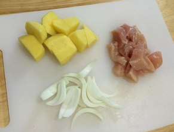
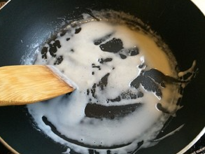
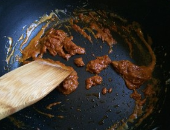
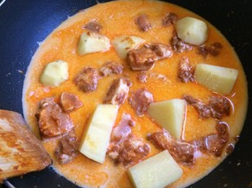
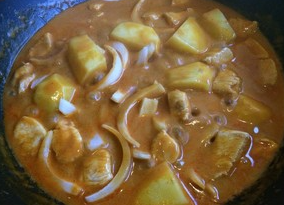

-

-
世界十大美食之首马沙文咖喱，简单方便又美味!
在201 4年美国CNN评选的世界10大美食中,咖喱鼻祖印度的Massaman位居第一 , 音译过来就是泰国马沙文咖喱。
美食用料：鸡胸肉、土豆、白洋葱、Massaman咖喱酱、椰浆、 鱼露、 炒熟的花生
美食类别：西餐
美食价格：299元
小提示
1：用带骨的整根鸡腿味道会更好，但要提前去掉鸡腿上多余的肥的部分。咖喱本身味道浓郁，太油的话会腻的。
2：炒香咖喱酱炒出红油这一步最好不要省略。如果你的椰浆剩的不多，没有多余椰浆来浓缩；或者用的不是100%的椰浆；更或者用的是冲调椰浆，那么用无特殊味道的食用油炒咖喱酱也是可以的。密集恐惧症患者请直接用油炒，相信我。
3：如果你的酸角是酸的，或者你用的就是泰国酸角酱，加点糖中和一下酸味。
4：我是一人份所以只用了市售半袋咖喱酱25g。一袋咖喱酱50g大概是两三人份，配250ml左右的椰浆，另外还需要一部份炒咖喱酱的椰浆。
- 先说酸角汁和棕榈糖。酸角又叫罗望子，一般酸的拿来入菜，甜的拿来做零食。我平时用的机会不多，所以我会直接拿酸角肉的零食自己做。加少许温水，带上手套把酸角汁挤出来就可以了。不过呢零食酸角都是甜的，所以就不用加棕榈糖了。实在没有的话这两样都可以省略。
-

- 土豆、白洋葱和鸡胸肉切小块。用整根带骨的鸡腿更好，鸡胸肉便宜嘛就用它了。白洋葱的味道不那么刺激，不要用紫洋葱。这样准备工作完成了
- 
- 锅中加入准备好的一小半椰浆，开中火加热。椰浆会起很多泡泡并且变稠，椰子油就会析出。
- 
- 把半袋25g咖喱酱放入，用椰浆析出的椰子油把咖喱酱炒香。有了这一步，咖喱的香味会比你一堆东西全部下锅直接煮好很多。
- 
- 放入鸡胸肉翻炒，让每块肉都均匀裹上咖喱酱。 土豆下锅，放入剩余的椰浆和适量清水，让汤汁能半没过食材。加入少许鱼露及酸角汁，放入香料（我放了一片香叶）。中火。
- 
- 汤汁浓稠后加入洋葱。直至土豆和洋葱绵软，尝一下味道，咸味不够加些鱼露。口味合适了即可撒入花生，装碗出锅。
- 